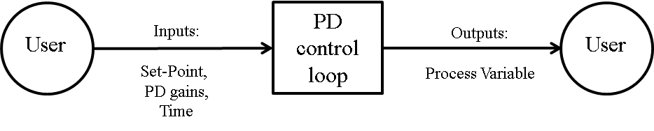
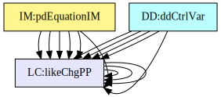
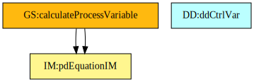
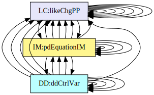

Software Requirements Specification for PD Controller
Naveen Ganesh Muralidharan
Table of Contents
An outline of all sections included in this SRS is recorded here for easy reference.
- Table of Contents
- Reference Material
- Introduction
- General System Description
- Specific System Description
- Requirements
- Likely Changes
- Traceability Matrices and Graphs
- References
Reference Material
This section records information for easy reference.
Table of Units
The unit system used throughout is SI (Système International d’Unités). In addition to the basic units, several derived units are also used. For each unit, the Table of Units lists the symbol, a description, and the SI name.
| Symbol | Description | SI Name |
|---|---|---|
| \({\text{kg}}\) | mass | kilogram |
| \({\text{s}}\) | time | second |
Table of Units
Table of Symbols
The symbols used in this document are summarized in the Table of Symbols along with their units. The symbols are listed in alphabetical order.
| Symbol | Description | Units |
|---|---|---|
| \({C_{\text{s}}}\) | Control Variable in the frequency domain | – |
| \(c\) | Damping coefficient of the spring | – |
| \({D_{\text{s}}}\) | Derivative control in the frequency domain | – |
| \({E_{\text{s}}}\) | Process Error in the frequency domain | – |
| \({F_{\text{s}}}\) | Laplace Transform of a function | – |
| \({f_{\text{t}}}\) | Function in the time domain | – |
| \({K_{\text{d}}}\) | Derivative Gain | – |
| \({K_{\text{p}}}\) | Proportional Gain | – |
| \(k\) | Stiffness coefficient | \({\text{s}}\) |
| \(\mathit{L⁻¹[F(s)]}\) | Inverse Laplace Transform of a function | – |
| \(m\) | Mass | \({\text{kg}}\) |
| \({P_{\text{s}}}\) | Proportional control in the frequency domain | – |
| \({R_{\text{s}}}\) | Set-Point in the frequency domain | – |
| \({r_{\text{t}}}\) | Set-Point | – |
| \(s\) | Complex frequency-domain parameter | – |
| \(t\) | Time | \({\text{s}}\) |
| \({t_{\text{sim}}}\) | Simulation Time | \({\text{s}}\) |
| \({t_{\text{step}}}\) | Step Time | \({\text{s}}\) |
| \({Y_{\text{s}}}\) | Process Variable in the frequency domain | – |
| \({y_{\text{t}}}\) | Process Variable | – |
Table of Symbols
Abbreviations and Acronyms
| Abbreviation | Full Form |
|---|---|
| A | Assumption |
| DD | Data Definition |
| GD | General Definition |
| GS | Goal Statement |
| IM | Instance Model |
| P | proportional |
| PD | proportional derivative |
| PID | proportional integral derivative |
| PS | Physical System Description |
| R | Requirement |
| RefBy | Referenced by |
| Refname | Reference Name |
| SRS | Software Requirements Specification |
| TM | Theoretical Model |
| Uncert. | Typical Uncertainty |
Abbreviations and Acronyms
Introduction
Automatic process control with a controller (P/PI/PD/PID) is used in a variety of applications such as thermostats, automobile cruise-control, etc. The gains of a controller in an application must be tuned before the controller is ready for production. Therefore, a simulation of the PD Controller with a Second Order System is created in this project based on the original, manually created version of PD Controller that can be used to tune the gain constants.
The following section provides an overview of the Software Requirements Specification (SRS) for PD Controller. This section explains the purpose of this document, the scope of the requirements, the characteristics of the intended reader, and the organization of the document.
Purpose of Document
The purpose of this document is to capture all the necessary information including assumptions, data definitions, constraints, models, and requirements to facilitate an unambiguous development of the PD Controller software and test procedures.
Scope of Requirements
The scope of the requirements includes a PD Control Loop with three subsystems, namely: a PD Controller, a Summing Point, and a Power Plant. Only the Proportional and Derivative controllers are used in this software; the Integral controller is beyond the scope of this project. Additionally, this software is intended to aid with the manual tuning of the PD Controller.
Characteristics of Intended Reader
Reviewers of this documentation should have an understanding of control systems (control theory and controllers) at the fourth-year undergraduate level and engineering mathematics at a second-year undergraduate level. The users of PD Controller can have a lower level of expertise, as explained in Sec:User Characteristics.
Organization of Document
The organization of this document follows the template for an SRS for scientific computing software proposed by koothoor2013, smithLai2005, smithEtAl2007, and smithKoothoor2016. The presentation follows the standard pattern of presenting goals, theories, definitions, and assumptions. For readers that would like a more bottom up approach, they can start reading the data definitions and trace back to find any additional information they require.
The goal statements are refined to the theoretical models and the theoretical models to the instance models. The instance model referred as IM:pdEquationIM provides an Ordinary Differential Equation (ODE) that models the PD Controller.
General System Description
This section provides general information about the system. It identifies the interfaces between the system and its environment, describes the user characteristics, and lists the system constraints.
System Context
Fig:systemContextDiag shows the system context. The circle represents an external entity outside the software, the user in this case. The rectangle represents the software system itself, PD Controller in this case. Arrows are used to show the data flow between the system and its environment.

Figure: System Context
PD Controller is self-contained. The only external interaction is with the user. The responsibilities of the user and the system are as follows:
- User Responsibilities
- Feed inputs to the model
- Review the response of the Power Plant
- Tune the controller gains
- PD Controller Responsibilities
- Check the validity of the inputs
- Calculate the outputs of the PD Controller and Power Plant
User Characteristics
The end-user of PD Controller is expected to have taken a course on Control Systems at an undergraduate level.
System Constraints
There are no system constraints.
Specific System Description
This section first presents the problem description, which gives a high-level view of the problem to be solved. This is followed by the solution characteristics specification, which presents the assumptions, theories, and definitions that are used.
Problem Description
A system is needed to provide a model of a PD Controller that can be used for the tuning of the gain constants before the deployment of the controller.
Terminology and Definitions
This subsection provides a list of terms that are used in the subsequent sections and their meaning, with the purpose of reducing ambiguity and making it easier to correctly understand the requirements.
- PD Controller: Proportional-Derivative Controller.
- PD Control Loop: Closed-Loop control system with PD Controller, Summing Point and Power Plant.
- Summing Point: Control block where the difference between the Set-Point and the Process Variable is computed.
- Power Plant: A second order system to be controlled.
- Second Order System: A system whose input-output relationship is denoted by a second-order differential equation.
- Process Error: Input to the PID controller. Process Error is the difference between the Set-Point and the Process Variable.
- Proportional control: A linear feedback control system where correction is applied to the controlled variable which is proportional to the difference between desired and measured values.
- Derivative control: Monitors the rate of change of the error signal and contributes a component of the output signal (proportional to a derivative of the error signal).
- Frequency domain: The analysis of mathematical functions in terms of frequency, instead of time.
- Time domain: The analysis of mathematical functions in terms of time.
- Control Variable: The Control Variable is the output of the PD controller.
- Transfer Function: The Transfer Function of a system is the ratio of the output to the input functions in the frequency domain.
- Damping Coefficient: Quantity that characterizes a second order system’s oscillatory response.
- Stiffness coefficient: Quantity that characterizes a spring’s stiffness.
- Simulation Time: Total execution time of the PD simulation.
- Process Variable: The output value from the power plant.
- Set-Point: The desired value that the control system must reach. This also knows as the reference variable.
- Proportional Gain: Gain constant of the proportional controller.
- Derivative Gain: Gain constant of the derivative controller.
- Laplace transform: An integral transform that converts a function of a real variable t (often time) to a function of a complex variable s (complex frequency).
- Step Time: Simulation step time.
- Absolute Tolerance: Absolute tolerance for the integrator.
- Relative Tolerance: Relative tolerance for the integrator.
Physical System Description
The physical system of PD Controller, as shown in Fig:pidSysDiagram, includes the following elements:
PS1: The Summing Point.
PS2: The PD Controller.
PS3: The Power Plant.

Figure: The physical system
Goal Statements
Given Set-Point, Simulation Time, Proportional Gain, Derivative Gain, and Step Time, the goal statement is:
Process-Variable: Calculate the output of the Power Plant (Process Variable) over time.
Solution Characteristics Specification
The instance models that govern PD Controller are presented in the Instance Model Section. The information to understand the meaning of the instance models and their derivation is also presented, so that the instance models can be verified.
Assumptions
This section simplifies the original problem and helps in developing the theoretical models by filling in the missing information for the physical system. The assumptions refine the scope by providing more detail.
Power plant: The Power Plant and the Sensor are coupled as a single unit. (RefBy: A:Spring Stiffness Coefficient, A:Transfer Function, A:Spring Mass, and A:Spring Damping Coefficient.)
Decoupled equation: The decoupled form of the PD Controller equation used in this simulation. (RefBy: DD:ddCtrlVar.)
Set-Point: The Set-Point is constant throughout the simulation. (RefBy: IM:pdEquationIM and DD:ddProcessError.)
External disturbance: There are no external disturbances to the Power Plant during the simulation. (RefBy: GD:gdPowerPlant.)
Initial Value: The initial value of the Process Variable is assumed to be zero. (RefBy: DD:ddProcessError.)
Parallel Equation: The Parallel form of the equation is used for the PD Controller. (RefBy: DD:ddCtrlVar.)
Unfiltered Derivative: A pure derivative function is used for this simulation; there are no filters applied. (RefBy: DD:ddDerivCtrl.)
Transfer Function: The combined Power Plant and Sensor (A:Power plant) are characterized by a Second Order mass-spring-damper System. (RefBy: TM:tmSOSystem.)
Spring Mass: The mass of the spring in the mass-spring-damper system (A:Power plant) is assumed to be 1 kilogram. (RefBy: GD:gdPowerPlant and LC:DC Gain and Time Constant.)
Spring Damping Coefficient: The Damping Coefficient of the spring in the mass-spring-damper system (A:Power plant) is assumed to be 1. (RefBy: GD:gdPowerPlant and LC:DC Gain and Time Constant.)
Spring Stiffness Coefficient: The Stiffness coefficient of the spring in the mass-spring-damper system (A:Power plant) is assumed to be 20. (RefBy: GD:gdPowerPlant and LC:DC Gain and Time Constant.)
Theoretical Models
This section focuses on the general equations and laws that PD Controller is based on.
| Refname | TM:laplaceTransform |
|---|---|
| Label | Laplace Transform |
| Equation | \[{F_{\text{s}}}=\int_{\mathit{-∞}}^{∞}{{f_{\text{t}}}\,e^{-s\,t}}\,dt\] |
| Description |
|
| Notes |
|
| Source | laplaceWiki |
| RefBy | GD:gdPowerPlant, DD:ddPropCtrl, DD:ddProcessError, and DD:ddDerivCtrl |
| Refname | TM:invLaplaceTransform |
|---|---|
| Label | Inverse Laplace Transform |
| Equation | \[{f_{\text{t}}}=\mathit{L⁻¹[F(s)]}\] |
| Description |
|
| Notes |
|
| Source | laplaceWiki |
| RefBy | IM:pdEquationIM |
| Refname | TM:tmSOSystem |
|---|---|
| Label | Second Order Mass-Spring-Damper System |
| Equation | \[\frac{1}{m\,s^{2}+c\,s+k}\] |
| Description |
|
| Notes |
|
| Source | abbasi2015 |
| RefBy | GD:gdPowerPlant |
General Definitions
This section collects the laws and equations that will be used to build the instance models.
| Refname | GD:gdPowerPlant |
|---|---|
| Label | The Transfer Function of the Power Plant |
| Equation | \[\frac{1}{s^{2}+s+20}\] |
| Description |
|
| Notes |
|
| Source | pidWiki and abbasi2015 |
| RefBy | IM:pdEquationIM |
Data Definitions
This section collects and defines all the data needed to build the instance models.
| Refname | DD:ddProcessError |
|---|---|
| Label | Process Error in the frequency domain |
| Symbol | \({E_{\text{s}}}\) |
| Units | Unitless |
| Equation | \[{E_{\text{s}}}={R_{\text{s}}}-{Y_{\text{s}}}\] |
| Description |
|
| Notes |
|
| Source | johnson2008 |
| RefBy | IM:pdEquationIM, DD:ddPropCtrl, and DD:ddDerivCtrl |
| Refname | DD:ddPropCtrl |
|---|---|
| Label | Proportional control in the frequency domain |
| Symbol | \({P_{\text{s}}}\) |
| Units | Unitless |
| Equation | \[{P_{\text{s}}}={K_{\text{p}}}\,{E_{\text{s}}}\] |
| Description |
|
| Notes |
|
| Source | johnson2008 |
| RefBy | DD:ddCtrlVar |
| Refname | DD:ddDerivCtrl |
|---|---|
| Label | Derivative control in the frequency domain |
| Symbol | \({D_{\text{s}}}\) |
| Units | Unitless |
| Equation | \[{D_{\text{s}}}={K_{\text{d}}}\,{E_{\text{s}}}\,s\] |
| Description |
|
| Notes |
|
| Source | johnson2008 |
| RefBy | DD:ddCtrlVar |
| Refname | DD:ddCtrlVar |
|---|---|
| Label | Control Variable in the frequency domain |
| Symbol | \({C_{\text{s}}}\) |
| Units | Unitless |
| Equation | \[{C_{\text{s}}}={E_{\text{s}}}\,\left({K_{\text{p}}}+{K_{\text{d}}}\,s\right)\] |
| Description |
|
| Notes |
|
| Source | johnson2008 |
| RefBy | IM:pdEquationIM |
Instance Models
This section transforms the problem defined in the problem description into one which is expressed in mathematical terms. It uses concrete symbols defined in the data definitions to replace the abstract symbols in the models identified in theoretical models and general definitions.
| Refname | IM:pdEquationIM |
|---|---|
| Label | Computation of the Process Variable as a function of time |
| Input | \({r_{\text{t}}}\), \({K_{\text{p}}}\), \({K_{\text{d}}}\) |
| Output | \({y_{\text{t}}}\) |
| Input Constraints | \[{r_{\text{t}}}\gt{}0\]\[{K_{\text{p}}}\gt{}0\]\[{K_{\text{d}}}\gt{}0\] |
| Output Constraints | \[{y_{\text{t}}}\gt{}0\] |
| Equation | \[\frac{\,d^{2}{y_{\text{t}}}}{\,dt^{2}}+\left(1+{K_{\text{d}}}\right)\,\frac{\,d{y_{\text{t}}}}{\,dt}+\left(20+{K_{\text{p}}}\right)\,{{y_{\text{t}}}}={r_{\text{t}}}\,{K_{\text{p}}}\] |
| Description |
|
| Source | abbasi2015 and johnson2008 |
| RefBy | FR:Output-Values and FR:Calculate-Values |
Detailed derivation of Process Variable:
The Process Variable \({Y_{\text{s}}}\) in a PD Control Loop is the product of the Process Error (from DD:ddProcessError), Control Variable (from DD:ddCtrlVar), and the Power Plant (from GD:gdPowerPlant).
\[{Y_{\text{s}}}=\left({R_{\text{s}}}-{Y_{\text{s}}}\right)\,\left({K_{\text{p}}}+{K_{\text{d}}}\,s\right)\,\frac{1}{s^{2}+s+20}\]
Substituting the values and rearranging the equation.
\[s^{2}\,{Y_{\text{s}}}+\left(1+{K_{\text{d}}}\right)\,{Y_{\text{s}}}\,s+\left(20+{K_{\text{p}}}\right)\,{Y_{\text{s}}}-{R_{\text{s}}}\,s\,{K_{\text{d}}}-{R_{\text{s}}}\,{K_{\text{p}}}=0\]
Computing the Inverse Laplace Transform of a function (from TM:invLaplaceTransform) of the equation.
\[\frac{\,d\frac{\,d{y_{\text{t}}}}{\,dt}}{\,dt}+\left(1+{K_{\text{d}}}\right)\,\frac{\,d{y_{\text{t}}}}{\,dt}+\left(20+{K_{\text{p}}}\right)\,{y_{\text{t}}}-{K_{\text{d}}}\,\frac{\,d{r_{\text{t}}}}{\,dt}-{r_{\text{t}}}\,{K_{\text{p}}}=0\]
The Set-Point \({r_{\text{t}}}\) is a step function and a constant (from A:Set-Point). Therefore the differential of the set point is zero. Hence the equation reduces to
\[\frac{\,d\frac{\,d{y_{\text{t}}}}{\,dt}}{\,dt}+\left(1+{K_{\text{d}}}\right)\,\frac{\,d{y_{\text{t}}}}{\,dt}+\left(20+{K_{\text{p}}}\right)\,{y_{\text{t}}}-{r_{\text{t}}}\,{K_{\text{p}}}=0\]
Data Constraints
The Data Constraints Table shows the data constraints on the input variables. The column for physical constraints gives the physical limitations on the range of values that can be taken by the variable. The uncertainty column provides an estimate of the confidence with which the physical quantities can be measured. This information would be part of the input if one were performing an uncertainty quantification exercise. The constraints are conservative to give the user of the model the flexibility to experiment with unusual situations. The column of typical values is intended to provide a feel for a common scenario.
| Var | Physical Constraints | Typical Value | Uncert. |
|---|---|---|---|
| \({K_{\text{d}}}\) | \({K_{\text{d}}}\geq{}0\) | \(1\) | 10\(\%\) |
| \({K_{\text{p}}}\) | \({K_{\text{p}}}\gt{}0\) | \(20\) | 10\(\%\) |
| \({r_{\text{t}}}\) | \({r_{\text{t}}}\gt{}0\) | \(1\) | 10\(\%\) |
| \({t_{\text{sim}}}\) | \(1\leq{}{t_{\text{sim}}}\leq{}60\) | \(10\) \({\text{s}}\) | 10\(\%\) |
| \({t_{\text{step}}}\) | \(\frac{1}{1000}\leq{}{t_{\text{step}}}\lt{}{t_{\text{sim}}}\) | \(0.001\) \({\text{s}}\) | 10\(\%\) |
Input Data Constraints
Requirements
This section provides the functional requirements, the tasks and behaviours that the software is expected to complete, and the non-functional requirements, the qualities that the software is expected to exhibit.
Functional Requirements
This section provides the functional requirements, the tasks and behaviours that the software is expected to complete.
Input-Values: Input the values from Tab:ReqInputs.
Verify-Input-Values: Ensure that the input values are within the limits specified in the data constraints.
Calculate-Values: Calculate the Process Variable (from IM:pdEquationIM) over the simulation time.
Output-Values: Output the Process Variable (from IM:pdEquationIM) over the simulation time.
| Symbol | Description | Units |
|---|---|---|
| \({K_{\text{d}}}\) | Derivative Gain | – |
| \({K_{\text{p}}}\) | Proportional Gain | – |
| \({r_{\text{t}}}\) | Set-Point | – |
| \({t_{\text{sim}}}\) | Simulation Time | \({\text{s}}\) |
| \({t_{\text{step}}}\) | Step Time | \({\text{s}}\) |
Required Inputs
Non-Functional Requirements
This section provides the non-functional requirements, the qualities that the software is expected to exhibit.
Portability: The code shall be portable to multiple environments, particularly Windows, Mac OSX, and Linux.
Security: The code shall be immune to common security problems such as memory leaks, divide by zero errors, and the square root of negative numbers.
Maintainability: If a likely change is made to the finished software, it will take at most 10\(\%\) of the original development time, assuming the same development resources are available.
Verifiability: The code is tested with complete verification and validation plan.
Likely Changes
This section lists the likely changes to be made to the software.
DC Gain and Time Constant: The mass, Damping Coefficient and the Stiffness coefficient may be changed to be supplied by the user (from A:Spring Mass, A:Spring Damping Coefficient, and A:Spring Stiffness Coefficient).
Traceability Matrices and Graphs
The purpose of the traceability matrices is to provide easy references on what has to be additionally modified if a certain component is changed. Every time a component is changed, the items in the column of that component that are marked with an “X” should be modified as well. Tab:TraceMatAvsA shows the dependencies of the assumptions on each other. Tab:TraceMatAvsAll shows the dependencies of the data definitions, theoretical models, general definitions, instance models, requirements, likely changes, and unlikely changes on the assumptions. Tab:TraceMatRefvsRef shows the dependencies of the data definitions, theoretical models, general definitions, and instance models on each other. Tab:TraceMatAllvsR shows the dependencies of the requirements and goal statements on the data definitions, theoretical models, general definitions, and instance models.
Traceability Matrix Showing the Connections Between Assumptions and Other Assumptions
Traceability Matrix Showing the Connections Between Assumptions and Other Items
Traceability Matrix Showing the Connections Between Items and Other Sections
Traceability Matrix Showing the Connections Between Requirements, Goal Statements and Other Items
The purpose of the traceability graphs is also to provide easy references on what has to be additionally modified if a certain component is changed. The arrows in the graphs represent dependencies. The component at the tail of an arrow is depended on by the component at the head of that arrow. Therefore, if a component is changed, the components that it points to should also be changed. Fig:TraceGraphAvsA shows the dependencies of assumptions on each other. Fig:TraceGraphAvsAll shows the dependencies of data definitions, theoretical models, general definitions, instance models, requirements, likely changes, and unlikely changes on the assumptions. Fig:TraceGraphRefvsRef shows the dependencies of data definitions, theoretical models, general definitions, and instance models on each other. Fig:TraceGraphAllvsR shows the dependencies of requirements and goal statements on the data definitions, theoretical models, general definitions, and instance models. Fig:TraceGraphAllvsAll shows the dependencies of dependencies of assumptions, models, definitions, requirements, goals, and changes with each other.

Figure: TraceGraphAvsA

Figure: TraceGraphAvsAll
Figure: TraceGraphRefvsRef

Figure: TraceGraphAllvsR

Figure: TraceGraphAllvsAll
For convenience, the following graphs can be found at the links below:
{kind=link}
{kind=link}
{kind=link}
{kind=link}
{kind=link}
References
[1]: Abbasi, Nasser M. A differential equation view of closed loop control systems. November, 2020. https://www.12000.org/my_notes/connecting_systems/report.htm.
[2]: Johnson, Michael A. and Moradi, Mohammad H. PID Control: New Identification and Design Methods, Chapter 1. Springer Science and Business Media, 2006. Print.
[3]: Koothoor, Nirmitha. A Document Driven Approach to Certifying Scientific Computing Software. McMaster University, Hamilton, ON, Canada: 2013. Print.
[4]: Smith, W. Spencer and Koothoor, Nirmitha. “A Document-Driven Method for Certifying Scientific Computing Software for Use in Nuclear Safety Analysis.” Nuclear Engineering and Technology, vol. 48, no. 2, April, 2016. http://www.sciencedirect.com/science/article/pii/S1738573315002582. pp. 404–418.
[5]: Smith, W. Spencer and Lai, Lei. “A new requirements template for scientific computing.” Proceedings of the First International Workshop on Situational Requirements Engineering Processes - Methods, Techniques and Tools to Support Situation-Specific Requirements Engineering Processes, SREP’05. Edited by PJ Agerfalk, N. Kraiem, and J. Ralyte, Paris, France: 2005. pp. 107–121. In conjunction with 13th IEEE International Requirements Engineering Conference,
[6]: Smith, W. Spencer, Lai, Lei, and Khedri, Ridha. “Requirements Analysis for Engineering Computation: A Systematic Approach for Improving Software Reliability.” Reliable Computing, Special Issue on Reliable Engineering Computation, vol. 13, no. 1, February, 2007. https://doi.org/10.1007/s11155-006-9020-7. pp. 83–107.
[7]: Wikipedia Contributors. Laplace transform. November, 2020. https://en.wikipedia.org/wiki/Laplace_transform.
[8]: Wikipedia Contributors. PID controller. October, 2020. https://en.wikipedia.org/wiki/PID_controller.